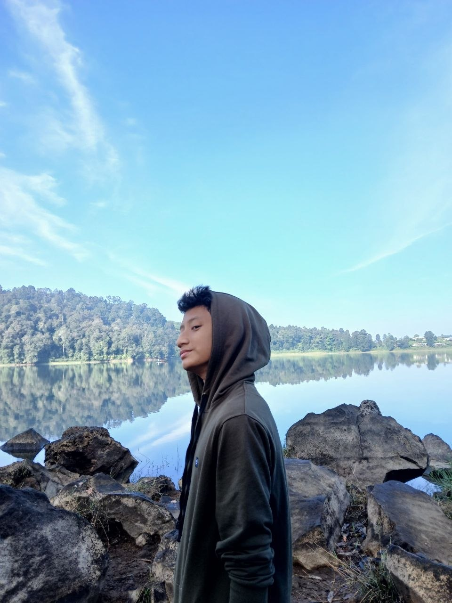
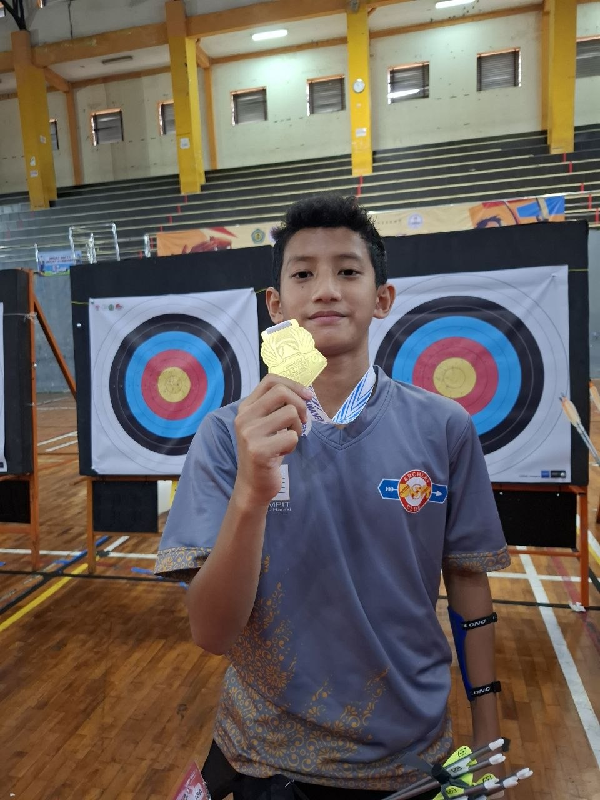
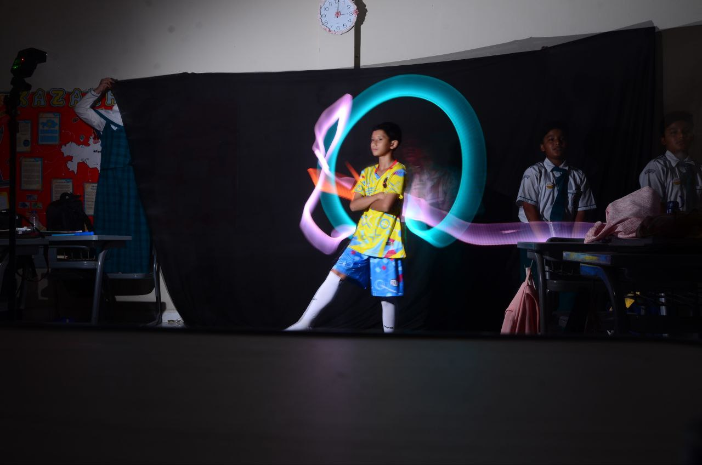

Selamat Datang di Website Portofolio
Website ini merupakan media pendukung untuk menampilkan hasil Ujian Praktik Terintegrasi. Konten utama pada website ini adalah video broadcasting pembelajaran yang berisi penyampaian teks argumentasi secara lisan. Adapun beberapa karya saya dari level 7 hinggal level 9
Tentang Website Ini
Website ini merupakan website portofolio digital yang berisi hasil karya dan pembelajaran saya selama bersekolah di SMPIT AL-HARAKI serta karya saya dalam mengikuti Ujian Praktik Terintegrasi.
Tujuan Pembuatan Website
Tujuan pembuatan website ini adalah untuk memenuhi nilai ujian praktik terintegrasi TIK, Bahasa Indonesia, Dan juga broadcasting, serta menampilkan beberapa karya yang telah saya buat serta melatih kemampuan saya dalam membuat website sederhana menggunakan HTML.
Topik Argumentasi dan Alasan Pemilihan
Di dalam video yang saya buat saya mengangkat topik mengenai kebermanfaatan program Internship Curriculum bagi siswa seperti saya, pengalaman saya megikuti program internship curriculum dibidang designing selama 3 hari di Shabira By Rina Oshibana. Dan, di video saya juga membahas tentang bahaya fast fashion yang sangat berbahaya bagi lingkungan dan kesehatan karena membuat limbah tekstil yang begitu banyak yang beserta dengan solusi yang dapat megurangi limbah tekstil yang lumayan signifikan jika langkah ini dapat diterapkan masyarakat Indonesia yaitu Slow fashion. Saya memilih topik-topik tersebut karena menurut saya progarm ini sangat berkesan dan sangat bermanfaat unutk mengasah skill enterpreneur dan saya ingin mebagikan pengalaman saya saat menjalani program internship curriculum. Selanjutnya kenapa saya memilih topik bahaya fast fashion karena saya juga baru tahu kalau ada masalah ini karena saya diberitahu pembimbing saya saat menjalankan program internship curriculum dan juga sebagai pengingat untuk diri saya sendiri maupun orang lain untuk selalu mengedepankan kualitas fashion dibandingkan trend fashion yang cepat tetapi kualitas fashion nya tergolong kurang berkualitas
Harapan dari Video
Dari video yang saya buat, saya berharap agar generasi muda Indonesia tidak malas unutk megasah kemampuan enterpreneur yang dimilikinya agar bakat enerpreneur dapat dimaksimalkan dan dimanfaatkan dengan baik. salah satunya dengan mengikuti program Internsip Curriculum atau program serupa. Dan juga saya berharap agar masyarakat dapat lebih peka terhadap masalah lingkungan serta saya beharap masalah fast fasion dapat terhentikan dengan menggerakkan slow fashion agar limbah tekstil yang dapat merusak lingkungan bisa dikurangi dan pakaian awet dan tentunya berkualitas
Refleksi, Kesan, dan Pesan
Dari uprak ini saya mendapat banyak pelajaran. kita membutuhkan sikap Manajeman waktu yangb agus, disiplin, proaktif dan jujur agar kita dapat mnyelesaikan ujian dengan maksimal. kesan saya selama belajar di kelas 9 An-Nasr itu saya sangat nyaman dengan kelas ini. karena saya nyama dengan kelas ini saya dapat dengan mudah memahami materi yang disampaikan dengan guru. Lingkungan sekolah juga sangat memberikan kesan nyaman tersendiri untuk saya.



